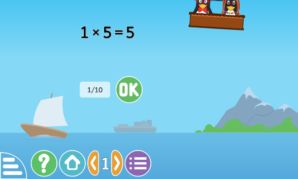

Multiplying numbers by using ICT
Numbers can be multiplied by using ICT.
Example
1 × 5 =
Solution
Use the computer application in the TIE online library https://tie.go.tz/pages/download-software to multiply numbers.

Steps
- 1. Open the application for multiplication of numbers.
- 2. Read the question that appears on the screen clearly.
- 3. Type the answer by clicking on the keyboard.
- 4. Click OK to check your answer.
- 5. Do the next questions to practice multiplication of numbers by using ICT.